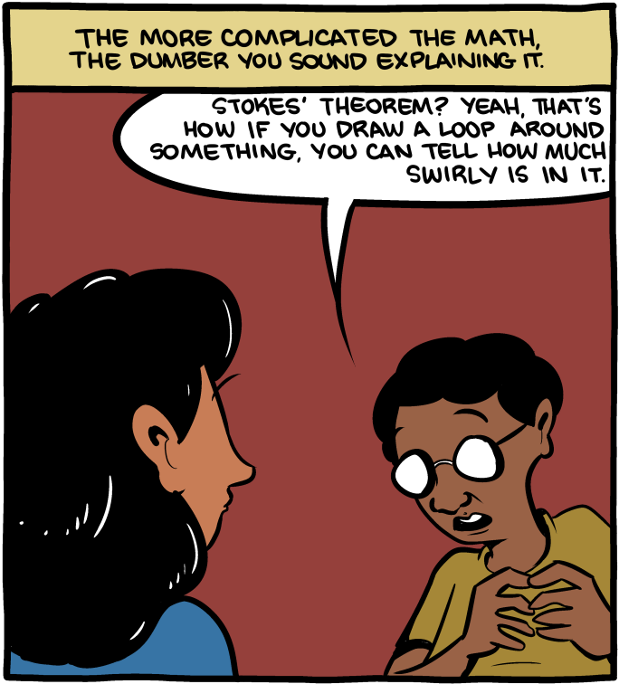

Overview
About JIRA
Why I think it’s awesome
Filters
Boards
Things to try
Doing more with less
What is a JIRA and how do I get one?
Jira is a tool developed by Atlassian for project management.
2002, Version 6.3.8
Predates the cloud
“Enterprise Strength”
Loved and Hated
No free option
Why I think it’s awesome
Some cliches about powerful things.
Filters: What are they?
A way of getting at every ticket that exists in JIRA served up any way that you want them.
Filters: Why are they good?
Two strengths, Basic and Developer
Sharable
Savable
Confluence Integration
Filters: Getting started
Go to issues and see what’s public
Click around in basic
Check it out in advanced (if brave)
Completion is your friend
Boards: What are they?
Filters >>= Kanban
Boards: Why are they good?
Day to day
Sprints
Overviews
Boards: Getting Started
Make a filter
Make a board
Food and Questions Break

Android Workflow
Mirrors most (all?) web teams
Never delete issues
Tasteful validations
Lots of filters and boards
Advanced: Things to try
Add/Delete fields
Create private boards
Subtasks
Epics
Add/Delete Issue types
Validations
Webhooks / API
Additional Resources
Get them while they’re hot.